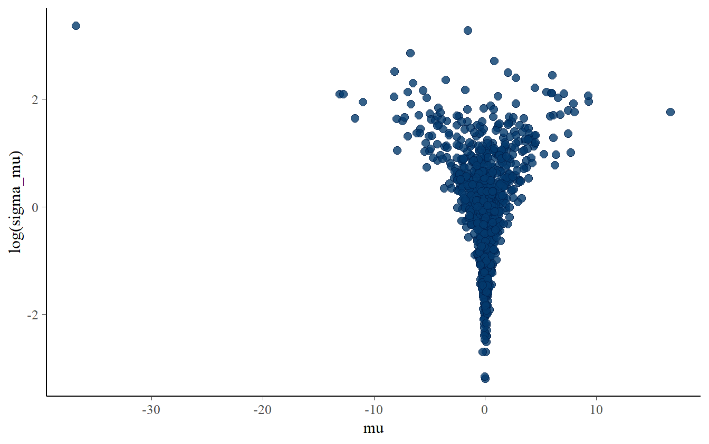

Day 3 Hierarchical/Multilevel modeling (part 1)
3.1 Pest control example: negative-binomial model
We now try to fit a NB to the data. We will start by simulating fake data from the prior predictive distribution. The Stan program to generate fake data is written as follows:
// Multi NB data generating process
functions {
/*
* Alternative to neg_binomial_2_log_rng() that
* avoids potential numerical problems during warmup
*/
int neg_binomial_2_log_safe_rng(real eta, real phi) {
real gamma_rate = gamma_rng(phi, phi / exp(eta));
if (gamma_rate >= exp(20.79))
return -9;
return poisson_rng(gamma_rate);
}
}
data {
int<lower = 1> N; // Number of observations
}
parameters {
}
model {
}
generated quantities {
// Declare simulated variables
vector[N] log_sq_foot;
int live_in_super[N];
int traps[N];
int complaints[N];
// Generate parameter values from the prior predictive distribution
real alpha = normal_rng(log(4), 0.1);
real beta = normal_rng(-0.25, 0.1);
real beta_super = normal_rng(-0.5, 0.1);
real inv_phi = fabs(normal_rng(0, 1));
// Generate fake data
for(n in 1:N) {
// Generate covariates
log_sq_foot[n] = normal_rng(1.5, 0.1);
live_in_super[n] = bernoulli_rng(0.5);
traps[n] = poisson_rng(8);
// Generate outcome
complaints[n] = neg_binomial_2_log_safe_rng(
alpha +
beta * traps[n] +
beta_super * live_in_super[n] +
log_sq_foot[n],
inv(inv_phi)
);
}
}# Compile the model
multi_NB_comp_dgp <- stan_model(
file = "stan_programs/multi_nb_dgp.stan"
)
# Sampling from the prior predictive distributions
fitted_fake_data_pest_NB <- sampling(
object = multi_NB_comp_dgp,
data = list(N = nrow(pest_data)),
chains = 1,
cores = 1,
iter = 1,
algorithm = 'Fixed_param',
seed = 123
)#>
#> SAMPLING FOR MODEL 'multi_nb_dgp' NOW (CHAIN 1).
#> Iteration: 1 / 1 [100%] (Sampling)
#>
#> Elapsed Time: 0 seconds (Warm-up)
#> 0 seconds (Sampling)
#> 0 seconds (Total)# Get the fake data
fake_data_pest_NB <- rstan::extract(fitted_fake_data_pest_NB)Let’s now write the Stan program of the model we want to fit.
// Multiple NB regression
functions {
/*
* Alternative to neg_binomial_2_log_rng() that
* avoids potential numerical problems during warmup
*/
int neg_binomial_2_log_safe_rng(real eta, real phi) {
real gamma_rate = gamma_rng(phi, phi / exp(eta));
if (gamma_rate >= exp(20.79))
return -9;
return poisson_rng(gamma_rate);
}
}
data {
int<lower = 1> N; // number of observations
vector[N] log_sq_foot; // log square foot of the building
vector<lower = 0, upper = 1>[N] live_in_super; // is the bulding in super?
vector<lower = 0>[N] traps; // number of traps in the building
int<lower = 0> complaints[N]; // number of complaints in the building
}
parameters {
real alpha; // intercept
real beta; // coefficients on the traps
real beta_super; // coefficients on live in super
real<lower = 0> inv_phi; // inverse of phi coefficients
}
transformed parameters {
real phi = inv(inv_phi); // phi coefficient
}
model {
// Linear predictor
vector[N] eta = alpha +
beta * traps +
beta_super * live_in_super +
log_sq_foot;
// Priors
target += normal_lpdf(alpha | log(4), 1) +
normal_lpdf(beta | -0.25, 1) +
normal_lpdf(beta_super | -0.5, 1) +
normal_lpdf(inv_phi | 0, 1);
// Likelihood
target += neg_binomial_2_log_lpmf(complaints| eta, phi);
}
generated quantities {
// Declare simulated data from the model
int y_rep[N];
for(n in 1:N) {
real eta_rep = alpha +
beta * traps[n] +
beta_super * live_in_super[n] +
log_sq_foot[n];
y_rep[n] = neg_binomial_2_log_safe_rng(eta_rep, phi);
}
}
And we fit it to the fake data
# Create a list to pass to Stan program
fake_data_pest_NB_list <- list(
N = nrow(pest_data),
log_sq_foot = fake_data_pest_NB$log_sq_foot[1, ],
live_in_super = fake_data_pest_NB$live_in_super[1, ],
traps = fake_data_pest_NB$traps[1, ],
complaints = fake_data_pest_NB$complaints[1, ]
)
# Compile the model
multi_NB_reg_comp <- stan_model(
file = "stan_programs/multi_nb_regression.stan"
)
# Sampling from the posterior
fitted_model_NB_reg_fake <- sampling(
object = multi_NB_reg_comp,
data = fake_data_pest_NB_list,
warmup = 1000L,
iter = 2000L,
chains = 4L,
seed = mcmc_seed
)post_alpha_betas <- as.matrix(
fitted_model_NB_reg_fake,
pars = c("alpha", "beta", "beta_super", "inv_phi")
)
true_alpha_beta <- c(
fake_data_pest_NB$alpha,
fake_data_pest_NB$beta,
fake_data_pest_NB$beta_super,
fake_data_pest_NB$inv_phi
)
mcmc_recover_hist(
x = post_alpha_betas,
true = true_alpha_beta
)The model recover the values of the parameters. Let’s now fit the model to the real data.
# List of data to pass to the model
pest_data_list_multi <- list(
N = nrow(pest_data),
traps = pest_data$traps,
complaints = pest_data$complaints,
log_sq_foot = sqrt(pest_data$total_sq_foot/1e4),
live_in_super = pest_data$live_in_super
)
# Sampling from the posterior distribution
fitted_model_NB_multi <- sampling(
object = multi_NB_reg_comp,
data = pest_data_list_multi,
warmup = 1000L,
iter = 2000L,
chains = 4L,
seed = mcmc_seed
)Let’s now perform some posterior predictive checks. First we compare distribution of observed data with the distributions of replicated data from the fitted model
# Get replicated data
y_rep <- as.matrix(
fitted_model_NB_multi,
pars = c("y_rep")
)
# Compare the distributions
ppc_dens_overlay(
y = pest_data$complaints,
yrep = y_rep[1:200, ]
)The proportion of zeros
# Function that computes the proportion of zeros
prop_zero_fun <- function(x) mean(x == 0)
# Compare the proportions
ppc_stat(
y = pest_data$complaints,
yrep = y_rep[1:200,],
stat = "prop_zero_fun"
)The observed number of complaints vs the expected number of complaints
# Comparison of observed and expected number of complaints
ppc_rootogram(
pest_data$complaints,
yrep = y_rep
)And the observed vs posterior predictive number of complaints given the number of traps.
ppc_intervals(
y = pest_data$complaints,
yrep = y_rep,
x = pest_data$traps
) +
labs(
x = "Number of traps",
y = "Number of complaints"
)The NB model had a better fit to the data than the poisson model.
We have not fully considered the structure of our data, i.e. the observations are grouped into buildings. In such situations, it may be a good idea account for this, since the mean and the variance may not be constant for all observations (which are likely not i.i.d.).
We can do posterior predictive checks comparing the observed and posterior predictive average number of complaints for each building.
ppc_stat_grouped(
y = pest_data$complaints,
yrep = y_rep,
group = pest_data$building_id,
stat = "mean",
binwidth = 0.2
)As we can see, our model was not able to capture different variability for some buildings. We can try to model the variation across buldings.
3.2 Pest control example: hierarchical model (varying intercept)
We now relax the assumpionts of constant mean across all the buildings and allow for different different parameters (intercept or slope) across them. We can do this by fitting a hierarchical model, allowing the parameters of the model to vary by buildings.
We can start by adding a varying intercept. The model can be formalized as follows:
\[ \text{complaints}_{b,t} \sim \text{Neg-Binomial}(\lambda_{b,t}, \phi) \\ \lambda_{b,t} = \exp{(\eta_{b,t})} \\ \eta_{b,t} = \mu_b + \beta \, {\rm traps}_{b,t} + \beta_{\rm super}\, {\rm super}_b + \text{log_sq_foot}_b \\ \mu_b \sim \text{Normal}(\alpha, \sigma_{\mu}) \]
In our Stan model, \(\mu_b\) is the \(b\)-th element of the vector \(\texttt{mu}\) which has one element per building.
We have one predictor that varies only by building. Thus, we can rewrite the above model more efficiently like so:
\[ \eta_{b,t} = \mu_b + \beta \, {\rm traps}_{b,t} + \text{log_sq_foot}_b\\ \mu_b \sim \text{Normal}(\alpha + \beta_{\text{super}} \, \text{super}_b , \sigma_{\mu}) \]
Moreovere, we can exploit the fact that in our data we have information at the building level, i.e. the average age of the residents, the average age of the buildings, and the average per-apartment monthly rent. We can store this information into a matrix that we will call bulding data that has one row per bulding and four columns, one for each bulding-level predictor:
live_in_superage_of_buildingaverage_tentant_agemonthly_average_rent
We can now write our model as follows:
\[ \eta_{b,t} = \alpha_b + \beta \, {\rm traps} + \text{log_sq_foot}\\ \mu \sim \text{Normal}(\alpha + \texttt{building_data} \, \zeta, \,\sigma_{\mu}) \]
3.2.1 Preparing hierarchical data for Stan program
We have to prepare the data to pass to the Stan program.
N_months <- length(unique(pest_data$date))
N_buildings <- length(unique(pest_data$building_id))
# Add some IDs for building and month
pest_data <- pest_data %>%
mutate(
building_fac = factor(
building_id,
levels = unique(building_id)
),
building_idx = as.integer(building_fac),
ids = rep(
1:N_months,
N_buildings
),
# Create month id (use it later with autoregressive models)
mo_idx = lubridate::month(date)
)
# Center and rescale the building specific data
building_data <- pest_data %>%
select(
building_idx,
live_in_super,
age_of_building,
total_sq_foot,
average_tenant_age,
monthly_average_rent
) %>%
# Select only one row per bulding (the other rows are identical)
unique() %>%
# Reorder by building_id (not mandatory)
arrange(building_idx) %>%
select(-building_idx) %>%
# Subtract the mean from each variable
scale(scale=FALSE) %>%
as.data.frame() %>%
# Scale the variables such that they are roughly on unit scale
mutate( # scale by constants
age_of_building = age_of_building / 10,
total_sq_foot = total_sq_foot / 10000,
average_tenant_age = average_tenant_age / 10,
monthly_average_rent = monthly_average_rent / 1000
) %>%
as.matrix()
# Make data list for Stan
stan_dat_hier <-
with(pest_data,
list(complaints = complaints,
traps = traps,
N = length(traps),
J = N_buildings,
M = N_months,
log_sq_foot = log(pest_data$total_sq_foot/1e4),
# Remove the log_sq_foot var (use it as exposure)
building_data = building_data[, -3],
mo_idx = as.integer(as.factor(date)),
# K is the number of building-level predictors
K = 4,
building_idx = building_idx
)
)We rescaled the variables such that they are roughly on the same scale to make the computational process more easy. In fact, the sampling algorithm is faster when variables are roughly on the same scale and on the unit scale.
3.2.2 Centered parametrization
Let’s see how the Stan program changes adding a varying intercept.
// Hierarchical multiple Negative Binomial model
functions {
/*
* Alternative to neg_binomial_2_log_rng() that
* avoids potential numerical problems during warmup
*/
int neg_binomial_2_log_safe_rng(real eta, real phi) {
real gamma_rate = gamma_rng(phi, phi / exp(eta));
if (gamma_rate >= exp(20.79))
return -9;
return poisson_rng(gamma_rate);
}
}
data {
int<lower = 1> N;
int<lower = 0> complaints[N];
vector<lower = 0>[N] traps;
vector[N] log_sq_foot;
// Declare the hierarchical part
int<lower = 1> J; // number of building
int<lower = 1> K; // number of building variables
matrix[J, K] building_data; // matrix of building data
int<lower = 1, upper = J> building_idx[N]; // id of the building
}
parameters {
real<lower = 0> inv_phi; // inverse overdispersion's parameter
real beta; // coefficient on traps
real alpha; // intercept on the building
vector[J] mu; // varying intercept of the building
real<lower = 0> sigma_mu; // sd of the varying intercept
vector[K] zeta; // vector of coefficient of building vars
}
transformed parameters {
real phi = inv(inv_phi); // get the original phi
}
model {
/*If you define the linear predictor outside of the likelihood,
you must specify it as the first object of the model block.*/
// Likelihood
vector[N] eta = mu[building_idx] + // Loop over buildings
beta * traps +
log_sq_foot;
// complaints ~ neg_binomial_2_log(eta, phi);
target += neg_binomial_2_log_lpmf(complaints | eta, phi);
// Varying intercept on the building
// mu ~ normal(alpha + building_data * zeta, sigma_mu);
target += normal_lpdf(mu | alpha + building_data * zeta, sigma_mu);
// Priors on alpha, beta and inv_phi
// alpha ~ normal(log(4), 1);
// beta ~ normal(-0.25, 1);
// inv_phi ~ normal(0, 1);
target += normal_lpdf(alpha| log(4), 1) +
normal_lpdf(beta | -0.25, 1) +
normal_lpdf(inv_phi | 0, 1);
// Priors on the coefficients of buildings
// zeta ~ normal(0, 1);
// sigma_mu ~ normal(0, 1);
target += normal_lpdf(zeta | 0, 1) +
normal_lpdf(sigma_mu | 0, 1);
}
generated quantities {
int y_rep[N];
for (n in 1:N) {
// Define linear predictor into the loop as a temporary real number
real eta_rep = mu[building_idx[n]] +
beta * traps[n] +
log_sq_foot[n];
y_rep[n] = neg_binomial_2_log_safe_rng(eta_rep, phi);
}
}
We declared in the data block the structure of the building-level matrix and we added in the parameters block the parameters \(\mu\) and \(\sigma_{mu}\) of the distribution of the intercepts and the vector “zeta” of the coefficients of the building-level predictors. We also declared in the model block the contribution to the likelihood of the building-level information. Moreover, we added the term mu[building_idx] both in the model and generated quantities blocks, which tells to Stan to create a vector eta (linear predictor) with a different intercept for each building, that are identified by their id number (declared as [building_idx]) in the code.
Now let’s fit the model to the data
# Compile the model
hier_neg_bin_comp <- stan_model(
file = "stan_programs/hier_multiple_neg_bin.stan"
)
# Sampling from the posterior
fitted_model_NB_hier <- sampling(
hier_neg_bin_comp,
data = stan_dat_hier,
warmup = 1000L,
iter = 2000L,
chains = 4L,
seed = mcmc_seed
)What are all the warnings from Stan? What are divergent transitions?
If the Markov chains were not able to explore some regions of the posterior distribution, Stan will return some warnings which tell us that the trajectories of the Markov chains diverged and could not explore some sets of the posterior. When the chains were not able to explore all the regions of the posterior it is not recommended to use such model to do inference. In such situations, we should evaluate the patological behaviors of the algorithm and try to reparametrize the model in order to help the posterior surface exploration.
We can diagnose the problems faced by the chains during the sampling, by looking when and in which regions of the posterior the chains diverged. We can inspect this issues using bayesplot R package, the same we used to do posterior predictive checks.
Let’s first examine the summaries of the parameters of the model.
# Extract the fit of the model
post_NB_hier <- rstan::extract(fitted_model_NB_hier)
# Print posterior summaries of the most interest parameters
print(
fitted_model_NB_hier,
pars = c(
"alpha",
"beta",
"phi",
"mu",
"sigma_mu"
)
)#> Inference for Stan model: hier_multiple_neg_bin.
#> 4 chains, each with iter=2000; warmup=1000; thin=1;
#> post-warmup draws per chain=1000, total post-warmup draws=4000.
#>
#> mean se_mean sd 2.5% 25% 50% 75% 97.5% n_eff Rhat
#> alpha 1.26 0.02 0.43 0.40 1.00 1.27 1.54 2.09 548 1.01
#> beta -0.23 0.00 0.06 -0.35 -0.27 -0.23 -0.19 -0.11 560 1.01
#> phi 1.58 0.01 0.35 1.01 1.34 1.53 1.78 2.40 572 1.01
#> mu[1] 1.27 0.02 0.55 0.16 0.93 1.27 1.63 2.36 598 1.01
#> mu[2] 1.23 0.02 0.53 0.20 0.91 1.22 1.57 2.28 615 1.00
#> mu[3] 1.43 0.02 0.47 0.49 1.12 1.43 1.73 2.39 683 1.00
#> mu[4] 1.46 0.02 0.48 0.50 1.15 1.46 1.76 2.40 618 1.01
#> mu[5] 1.08 0.02 0.43 0.21 0.81 1.09 1.38 1.93 621 1.01
#> mu[6] 1.16 0.02 0.48 0.19 0.86 1.19 1.48 2.07 621 1.01
#> mu[7] 1.48 0.02 0.52 0.42 1.15 1.47 1.83 2.48 572 1.01
#> mu[8] 1.25 0.02 0.42 0.46 0.97 1.24 1.53 2.11 786 1.00
#> mu[9] 1.40 0.02 0.56 0.24 1.04 1.43 1.76 2.49 628 1.01
#> mu[10] 0.86 0.01 0.37 0.15 0.62 0.85 1.10 1.64 721 1.00
#> sigma_mu 0.27 0.01 0.17 0.07 0.15 0.24 0.36 0.69 453 1.01
#>
#> Samples were drawn using NUTS(diag_e) at Mon Sep 17 20:13:19 2018.
#> For each parameter, n_eff is a crude measure of effective sample size,
#> and Rhat is the potential scale reduction factor on split chains (at
#> convergence, Rhat=1).The effective sample size (column n_eff) and the \(\widehat{R}\) (column Rhat) are useful indicators of the goodness of the sampling.
Effective sample size. When the algorithm run a chain to sample from the posterior, every sample at each iteration can depend from the sample drawn from the previous iteration one. If the samples were totally indepedent, the error in exploring the posterior would be negligible as the square of the number of iteration increases. The effective sample size represents the number of samples from the posterior that are actually independent. Thus, high number of effective sample size means that the Markov Chain has less dependence from one state to the other and it is able to better move around the surface of the posterior.
\(\widehat{R}\). The potential scale reduction statistics split-\(\widehat{R}\) measures the ratio of the average variances of draws within each chain to the variance of pooled draws across chains. It is an indicator of the equilibrium of the chains. If all the chains are at equilibrium, then \(\widehat{R}\) will converge to \(1\). If chains did not converge to a common distribution, then \(\widehat{R}\) will be greated then \(1\).
While \(\widehat{R}\) is only slightly greater than \(1\) for not all the parameters, low values of the effective sample sizes mean that a lot of drawns from the posterior were dependent from each other.
We can look at the traceplot the see if the divergences form a pattern.
# use as.array to keep the markov chains separate for trace plots
mcmc_trace(
as.array(
fitted_model_NB_hier,
pars = 'sigma_mu'
),
np = nuts_params(fitted_model_NB_hier),
window = c(500,1000)
)The divergent parameters are highlighted with the red bars underneath the traceplots. For such samples, the sampler got stucked at the same parameter value of \(\sigma_\mu\).
We can plot the bivariate distribution of one of the varying intecepts vs \(\sigma_\mu\) (here we use the logarithm of \(\sigma_\mu\) the better visualize the distribution).
# assign to object so we can compare to another plot later
scatter_with_divs <- mcmc_scatter(
as.array(fitted_model_NB_hier),
pars = c(
"mu[4]",
'sigma_mu'
),
transform = list('sigma_mu' = "log"),
np = nuts_params(fitted_model_NB_hier)
)
scatter_with_divsBy looking at the plot above, it seems that divergent transitions mostly occured at the bottom of the distributions.
Let’s now look at the prior bivariate distribution to try to understand why divergent transitions were mostly concentrated in the same region of the posterior.
# Simulate from the prior distributions ------------------------------
# Number of simulations and vector of the parameters
N_sims <- 1000
log_sigma <- rep(NA, N_sims)
mu <- rep(NA, N_sims)
# Draw from the prior
for (j in 1:N_sims) {
log_sigma[j] <- rnorm(1, mean = 0, sd = 1)
mu[j] <- rnorm(1, mean = 0, sd = exp(log_sigma[j]))
}
# Bind the vector of draws
draws <- cbind(
"mu" = mu,
"log(sigma_mu)" = log_sigma
)
# Plot the bivariate prior distributions
mcmc_scatter(draws)
As we can see, the bivariate prior looks like a funnel as long as both \(\mu\) and \(\sigma_{\mu}\) approach \(0\). If the data were informative, we wouldn’t expect such a shape of the posterior. Given that our data are very noisy, it is very likely that the posterior will look similar to the prior. Indeed, the divergent transitions mostly occured in the steepest region of the posterior, where the funnel becomes very narrow. Such geometry of the posterior are very difficult to explore for the sampler.
Here’s another way to look at the divergent transitions for each pair of \(\sigma_{\mu}\) and \(\mu_{b}\).
parcoord_with_divs <- mcmc_parcoord(
as.array(
fitted_model_NB_hier,
pars = c("sigma_mu", "mu")
),
np = nuts_params(fitted_model_NB_hier)
)
parcoord_with_divsHow can we deal with these issues?
We will see later that a simple reparametrization of the model can highly help the sampler to fully explore the surface of the posterior distribution.
3.2.3 Non-centered parametrization
We can fix these problems by reparametrizing the distribution of \(mu\), the one that causes the divergent transitions of the chains. In particular, we can use the non-centered parametrization. Given that the distribution of \(mu\) has been specified as follows:
\[\begin{equation} \mu_{b} \sim N \left( \alpha + \text{building_data} \zeta, \sigma_{\mu} \right) \end{equation}\]we can multiply \(\sigma_{\mu}\) by an auxiliary variable as:
\[\begin{equation} \sigma_{\mu} = \sigma_{\mu} * \mu_{raw} \end{equation}\]This auxiliary variable \(\mu_{raw}\) decouples the depence between the density of \(\mu\) and \(\sigma_{mu}\) without changing the distribution of \(\mu_{b}\). We can modifiy the Stan program as follows:
// Hierarchical multiple Negative Binomial model
functions {
/*
* Alternative to neg_binomial_2_log_rng() that
* avoids potential numerical problems during warmup
*/
int neg_binomial_2_log_safe_rng(real eta, real phi) {
real gamma_rate = gamma_rng(phi, phi / exp(eta));
if (gamma_rate >= exp(20.79))
return -9;
return poisson_rng(gamma_rate);
}
}
data {
int<lower = 1> N;
int<lower = 0> complaints[N];
vector<lower = 0>[N] traps;
vector[N] log_sq_foot;
// Declare the hierarchical part
int<lower = 1> J; // number of building
int<lower = 1> K; // number of building variables
matrix[J, K] building_data; // matrix of building data
int<lower = 1, upper = J> building_idx[N]; // id of the building
}
parameters {
real<lower = 0> inv_phi; // inverse overdispersion's parameter
real beta; // coefficient on traps
real alpha; // intercept on the building
vector[J] mu_raw; // auxiliary parameter
real<lower = 0> sigma_mu; // sd of the varying intercept
vector[K] zeta; // vector of coefficient of building vars
}
transformed parameters {
// get the original phi
real phi = inv(inv_phi);
// get the original parameter of the varying intercept
vector[J] mu = alpha + building_data * zeta + sigma_mu * mu_raw;
}
model {
/*If you define the linear predictor outside of the likelihood,
you must specify it as the first object of the model block.*/
// Likelihood
vector[N] eta = mu[building_idx] + // Loop over buildings
beta * traps +
log_sq_foot;
// complaints ~ neg_binomial_2_log(eta, phi);
target += neg_binomial_2_log_lpmf(complaints | eta, phi);
// Priors on alpha, beta and inv_phi
// alpha ~ normal(log(4), 1);
// beta ~ normal(-0.25, 1);
// inv_phi ~ normal(0, 1);
target += normal_lpdf(alpha| log(4), 1) +
normal_lpdf(beta | -0.25, 1) +
normal_lpdf(inv_phi | 0, 1);
// Priors on the coefficients of buildings
// zeta ~ normal(0, 1);
// sigma_mu ~ normal(0, 1);
target += normal_lpdf(zeta | 0, 1) +
normal_lpdf(mu_raw| 0, 1) +
normal_lpdf(sigma_mu | 0, 1);
}
generated quantities {
int y_rep[N];
for (n in 1:N) {
// Define linear predictor into the loop as a temporary real number
real eta_rep = mu[building_idx[n]] +
beta * traps[n] +
log_sq_foot[n];
y_rep[n] = neg_binomial_2_log_safe_rng(eta_rep, phi);
}
}
We now fit the model and look at the effective sample size.
# Compile the model
hier_neg_bin_ncp_comp <- stan_model(
file = "stan_programs/hier_multiple_neg_bin_ncp.stan"
)
# Sampling from the posterior
fitted_model_NB_hier_ncp <- sampling(
hier_neg_bin_ncp_comp,
data = stan_dat_hier,
warmup = 1000L,
iter = 2000L,
chains = 4L, # 1 chain for a quick sampling
seed = mcmc_seed
)print(
fitted_model_NB_hier_ncp,
pars = c('sigma_mu','beta','alpha','phi','mu')
)#> Inference for Stan model: hier_multiple_neg_bin_ncp.
#> 4 chains, each with iter=2000; warmup=1000; thin=1;
#> post-warmup draws per chain=1000, total post-warmup draws=4000.
#>
#> mean se_mean sd 2.5% 25% 50% 75% 97.5% n_eff Rhat
#> sigma_mu 0.24 0.01 0.18 0.01 0.11 0.21 0.33 0.68 1173 1
#> beta -0.23 0.00 0.06 -0.35 -0.27 -0.23 -0.19 -0.11 2644 1
#> alpha 1.27 0.01 0.43 0.42 0.99 1.27 1.56 2.10 2620 1
#> phi 1.58 0.01 0.36 1.00 1.33 1.54 1.80 2.38 4000 1
#> mu[1] 1.30 0.01 0.54 0.20 0.96 1.31 1.65 2.39 2665 1
#> mu[2] 1.25 0.01 0.52 0.19 0.92 1.26 1.58 2.28 2726 1
#> mu[3] 1.41 0.01 0.48 0.48 1.08 1.41 1.73 2.37 2929 1
#> mu[4] 1.45 0.01 0.48 0.52 1.13 1.45 1.77 2.39 2908 1
#> mu[5] 1.08 0.01 0.41 0.26 0.82 1.08 1.35 1.88 3223 1
#> mu[6] 1.19 0.01 0.48 0.24 0.88 1.19 1.51 2.12 2626 1
#> mu[7] 1.47 0.01 0.51 0.45 1.13 1.47 1.82 2.47 2859 1
#> mu[8] 1.26 0.01 0.42 0.45 0.98 1.25 1.54 2.09 3377 1
#> mu[9] 1.43 0.01 0.56 0.28 1.07 1.44 1.81 2.51 2845 1
#> mu[10] 0.86 0.01 0.37 0.15 0.63 0.86 1.10 1.62 4000 1
#>
#> Samples were drawn using NUTS(diag_e) at Mon Sep 17 20:14:04 2018.
#> For each parameter, n_eff is a crude measure of effective sample size,
#> and Rhat is the potential scale reduction factor on split chains (at
#> convergence, Rhat=1).The number of the effective sample size is greater, meaning that the sampler had less difficult during the exploration of the posterior.
Let’s compare the posterior of models with centered and non-centered parametrization.
scatter_no_divs <- mcmc_scatter(
as.array(fitted_model_NB_hier_ncp),
pars = c(
"mu[4]",
'sigma_mu'
),
transform = list('sigma_mu' = "log"),
np = nuts_params(fitted_model_NB_hier_ncp)
)
bayesplot_grid(
scatter_with_divs,
scatter_no_divs,
grid_args = list(ncol = 2),
ylim = c(-11, 1)
)parcoord_no_divs <- mcmc_parcoord(
as.array(
fitted_model_NB_hier_ncp,
pars = c("sigma_mu", "mu")
),
np = nuts_params(fitted_model_NB_hier_ncp)
)
bayesplot_grid(
parcoord_with_divs,
parcoord_no_divs,
ylim = c(-3, 3)
)The sampler explore the posterior of the parameter \(\mu_{raw}\), which has a more isotropic geometry. In such a way, it was able to recover also the region of the posterior not previously explored.
Now let’s extract the posterior predictive values and do posterior predictive checks.
# Get posterior predictive values
post_hier_NB_ncp <- rstan::extract(
fitted_model_NB_hier_ncp,
pars = c('y_rep','inv_phi')
)
y_rep <- as.matrix(
fitted_model_NB_hier_ncp,
pars = "y_rep"
)
ppc_dens_overlay(
stan_dat_hier$complaints,
y_rep[1:200,]
)The posterior predicted replicates better resemble the distribution of the observed data. Let’s compare the average number of complaints across buldings,
ppc_stat_grouped(
y = stan_dat_hier$complaints,
yrep = y_rep,
group = pest_data$building_id,
stat = 'mean',
binwidth = 0.5
)the standard deviations,
ppc_stat_grouped(
y = stan_dat_hier$complaints,
yrep = y_rep,
group = pest_data$building_id,
stat = 'sd',
binwidth = 0.5
)and the proportion of zeros.
ppc_stat_grouped(
y = stan_dat_hier$complaints,
yrep = y_rep,
group = pest_data$building_id,
stat = 'prop_zero_fun',
binwidth = 0.05
)We can see that the model tends to overestimate the proportion of zero complaints for building “47”. It is possible that we have very noisy data for building “47” and we cannot estimate precisely the distribution of the outcome variable for that building. Thus, the model tends to be conservative and shrinks the posterior predictive values to the common estimate of a general building.